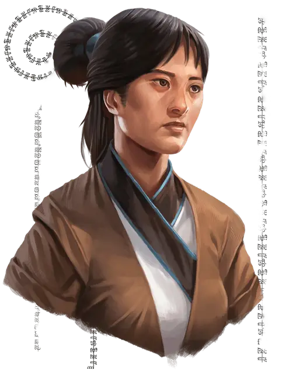

Цзи Лиань
Zi Liang
Средний Гуманоид (Человек из Шу), хаотично-добрый, именной НИП

Класс Доспеха 15 (защита без доспехов)
Хиты 22 (5к8)
Скорость 40 футов
| мод | спас | ||
|---|---|---|---|
| СИЛ | 12 | +1 | +1 |
| ЛОВ | 15 | +2 | +2 |
| ТЕЛ | 11 | +0 | +0 |
| мод | спас | ||
|---|---|---|---|
| ИНТ | 14 | +2 | +2 |
| МДР | 16 | +3 | +3 |
| ХАР | 11 | +0 | +0 |
Навыки Акробатика +4, Атлетика +3, Восприятие +5, Скрытность +4
Чувства пассивное Восприятие 15
Языки Общий, Гоблинский, Эльфийский
Опасность 0
Бонус мастерства +2
Особенности
Защита без доспехов. Если Цзи не носит ни доспех, ни щит, к её КД добавляется модификатор Мудрости.
Информация для отыгрыша. Цзи Лиань преданный последователь Чонти, Матери Земли. Она весьма слабо верит в защитников Золотых Полей, потому сама патрулирует фермы возле храма в свободное от своих обязанностей время.
Идеал. : «Если мы будем преданно возделывать свои сады и поля, Чонти воссияет над нами.»
Привязанность. : «Золотые Поля - житница Севера. Множество людей зависят от их безопасности и благополучия, и я сделаю всё, чтобы защитить их.»
Слабость. : «Я не верю в авторитеты и поступаю по велению сердца.»
Действия
Мультиатака. Цзи совершает две рукопашных атаки.
Боевой посох. Рукопашная атака оружием: +3 к попаданию, досягаемость 5 фт., одна цель. Попадание: 4 (1к6 + 1) дробящего урона или 5 (1к8 + 1) дробящего урона, если использовать посох двумя руками.
Праща. . Дальнобойная атака оружием: +4 к попаданию, дистанция 30/120 фт., одна цель. Попадание: 4 (1к4 + 2) дробящего урона. Цзи носит с собой двенадцать камней для пращи.